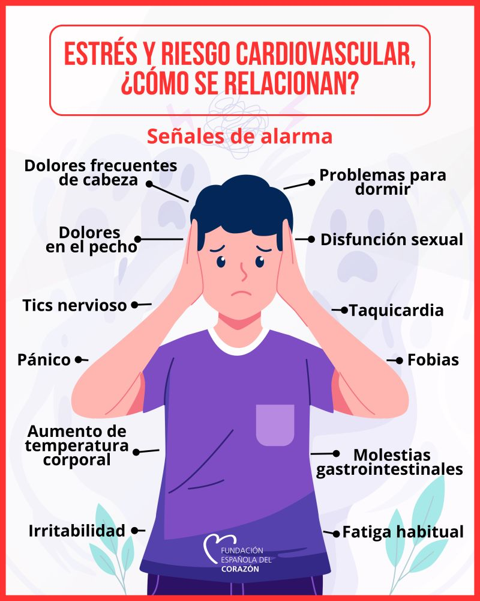
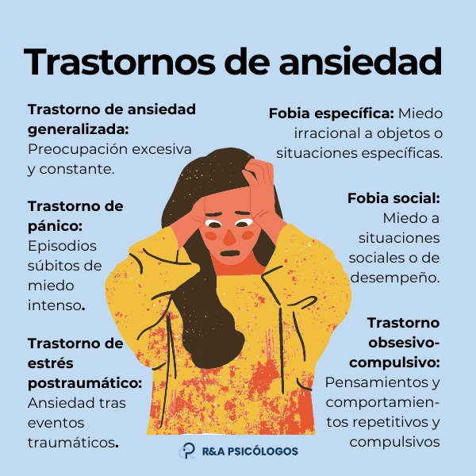

Conoce los detalles
Síntomas y Tipos de Ansiedad.

No todos experimentamos la ansiedad de la misma manera. Es una condición compleja que puede disfrazarse de muchas formas, desde molestias físicas hasta pensamientos intrusivos que no nos dejan dormir.
Para poder manejarla, el primer paso es aprender a identificarla. Reconocer cómo se manifiesta en tu mente y en tu cuerpo te da el poder de actuar antes de que la sensación te abrume por completo.
Existen varios trastornos clasificados dentro de la ansiedad, cada uno con sus propias características y desencadenantes. Comprender en qué se diferencian es vital para encontrar las técnicas de relajación y el apoyo adecuado.

Clasificación
Trastorno de Ansiedad Generalizada (TAG)
Se caracteriza por una preocupación persistente y excesiva por actividades o eventos cotidianos. La preocupación es desproporcionada a la situación actual.
Trastorno de Pánico
Episodios repetidos de sentimientos repentinos de ansiedad intensa o terror que alcanzan un pico en minutos. Suelen acompañarse de palpitaciones y dificultad para respirar.
Ansiedad Social
Miedo intenso, ansiedad y evasión de situaciones sociales debido a sentimientos de vergüenza, timidez y preocupación por ser juzgado negativamente.
Identificación
Síntomas Comunes
Síntomas Físicos
Tensión muscular, sudoración, temblores y mareos.
Síntomas Psicológicos
Inquietud, dificultad para concentrarse y miedo a perder el control.
Síntomas Conductuales
Evitación de ciertas situaciones, hipervigilancia y alteraciones del sueño.
Importante
Sentir ansiedad de vez en cuando es normal, pero si notas que tus preocupaciones interfieren con tu trabajo, tus relaciones o tu felicidad general, es momento de actuar. Reconocer el problema es el primer paso hacia el bienestar.
Toma el control.
Existen muchas herramientas prácticas que puedes utilizar día a día para gestionar tus niveles de ansiedad de forma efectiva.